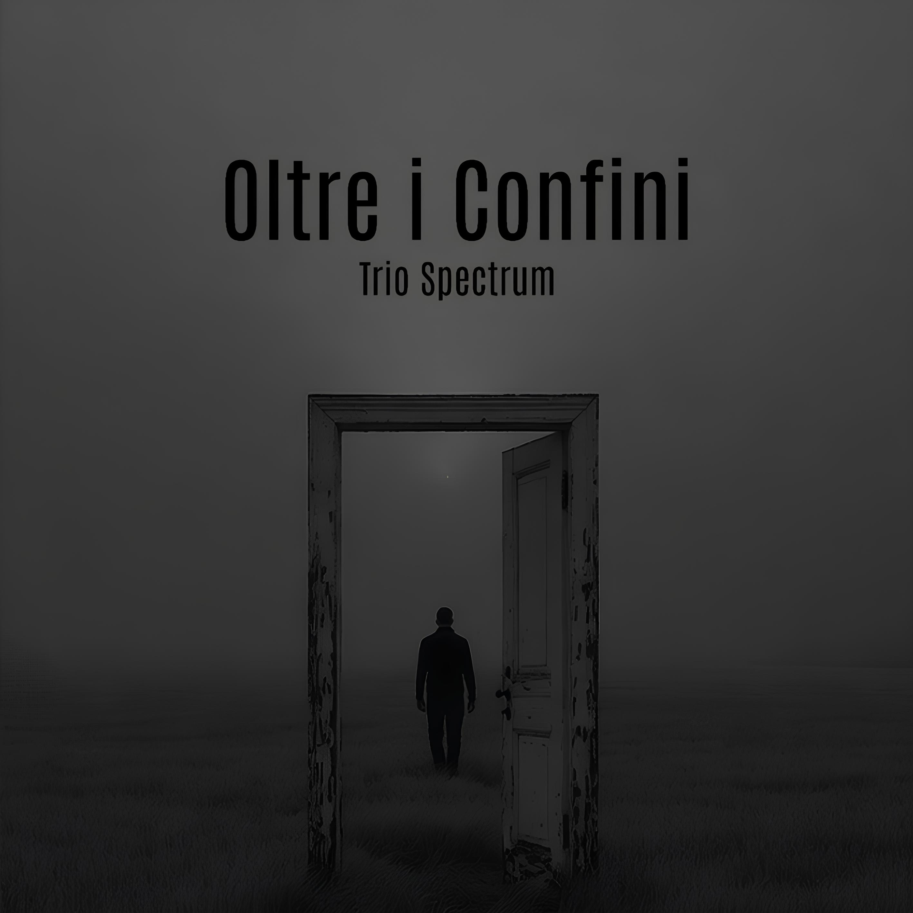

Musica classica
Trascrizioni e interpretazioni di opere appartenenti alla grande tradizione musicale, ripensate per la formazione del Trio Spectrum nel rispetto dello stile e dell'identità delle composizioni originali.
Ensemble italiano di Bayan

Il Trio Spectrum è un ensemble italiano fondato nel 2023 dall'incontro di tre musicisti accomunati dalla volontà di esplorare nuove prospettive artistiche attraverso una formazione cameristica originale.
Composto da tre Bayan, strumenti ad ancia libera appartenenti alla famiglia delle fisarmoniche, il Trio si distingue per una ricerca musicale che valorizza la ricchezza timbrica, la versatilità espressiva e le possibilità interpretative di questo particolare organico.
Attraverso un percorso fondato sullo studio, sulla ricerca e sulla condivisione musicale, il Trio Spectrum propone programmi concertistici che attraversano epoche e linguaggi differenti, contribuendo alla valorizzazione di questa formazione nel panorama musicale contemporaneo.
Il repertorio del Trio Spectrum nasce dal desiderio di costruire programmi concertistici capaci di dialogare con pubblici diversi, attraversando epoche, stili e linguaggi musicali. Trascrizioni, arrangiamenti e composizioni originali convivono in un percorso artistico che unisce tradizione, ricerca e innovazione.
Trascrizioni e interpretazioni di opere appartenenti alla grande tradizione musicale, ripensate per la formazione del Trio Spectrum nel rispetto dello stile e dell'identità delle composizioni originali.
Composizioni originali e opere contemporanee che esplorano nuovi linguaggi sonori, offrendo uno spazio privilegiato alla ricerca timbrica e alle potenzialità espressive dell'ensemble.
Celebri musiche per il cinema e arrangiamenti originali, concepiti per valorizzare il dialogo tra i tre strumenti e offrire al pubblico programmi coinvolgenti e di forte impatto comunicativo.
Programmi tematici ideati per teatri, festival, stagioni concertistiche e rassegne culturali, costruiti per valorizzare la versatilità dell'ensemble e adattarsi a differenti contesti artistici.
Il Trio Spectrum ha ottenuto importanti riconoscimenti in concorsi nazionali e internazionali, distinguendosi per la qualità delle interpretazioni, l'intesa cameristica e l'originalità della propria proposta artistica.

Primo progetto discografico del Trio Spectrum, Oltre i Confini rappresenta il punto d'incontro tra ricerca musicale, tradizione e nuove prospettive sonore.
Oltre i Confini è il primo progetto discografico del Trio Spectrum e rappresenta una sintesi del percorso artistico sviluppato dall'ensemble sin dalla sua fondazione.
Il titolo racchiude la volontà di superare confini stilistici, culturali e sonori, creando un dialogo tra repertori differenti e offrendo nuove prospettive d'ascolto attraverso una formazione cameristica dal carattere unico.
Il disco propone un itinerario musicale che intreccia tradizione e contemporaneità, ricerca e interpretazione, restituendo al pubblico una visione autentica dell'identità artistica del Trio Spectrum.
Il progetto discografico Oltre i Confini è disponibile sulle principali piattaforme digitali e in formato fisico.
Attraverso i link sottostanti è possibile ascoltare il disco in streaming oppure acquistare la copia fisica, sostenendo il progetto artistico del Trio Spectrum.
Il Trio Spectrum svolge un’intensa attività concertistica in collaborazione con associazioni, istituzioni musicali e realtà culturali su tutto il territorio nazionale e internazionale.
Le esibizioni del Trio si svolgono in auditorium, teatri e spazi culturali, proponendo programmi musicali capaci di unire tradizione, innovazione e ricerca sonora attraverso l’originale formazione di tre Bayan.
Ogni concerto rappresenta un viaggio attraverso differenti epoche e linguaggi musicali, con l’obiettivo di avvicinare il pubblico alla scoperta delle straordinarie possibilità espressive del Bayan.
Il Trio Spectrum ha collaborato con numerose associazioni e istituzioni musicali nell’ambito di stagioni concertistiche, rassegne ed eventi culturali.
Il Trio Spectrum svolge un'intensa attività concertistica collaborando con associazioni, istituzioni musicali e realtà culturali in Italia e all'estero.
I programmi proposti accompagnano il pubblico attraverso epoche, stili e linguaggi musicali differenti, con l'obiettivo di coniugare tradizione, ricerca e innovazione.
Ogni concerto nasce dal desiderio di condividere un'esperienza musicale coinvolgente, capace di valorizzare la ricchezza espressiva dell'ensemble e di avvicinare il pubblico a repertori e sonorità originali.
Nel corso della propria attività, il Trio Spectrum ha collaborato con numerose associazioni, istituzioni musicali e organizzatori di stagioni concertistiche, partecipando a festival, rassegne ed eventi culturali.
Per informazioni, collaborazioni artistiche, proposte concertistiche o richieste relative al Trio Spectrum, è possibile contattare l'ensemble attraverso i recapiti riportati di seguito.
Email
triospectrum23@gmail.com